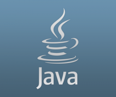

|  Tutti i linguaggi di programmazione esistenti possiedono (almeno) questi due concetti chiave:
Variabile: un dato o un insieme di dati, noti o ignoti, già memorizzati o da memorizzare; ad una variabile corrisponde sempre, da qualche parte, un certo numero (fisso o variabile) di locazioni di memoria che vengono allocate, cioè riservate, per contenere i dati stessi. Molti linguaggi inoltre attribuiscono alle variabili un tipo, con differenti proprietà (stringhe di testo, numeri, liste, atomi ecc.).
Istruzione: un comando oppure una regola descrittiva: anche il concetto di istruzione è molto variabile fra i vari linguaggi. A prescindere dal particolare linguaggio però, ogni volta che un'istruzione viene eseguita, lo stato interno del calcolatore (che sia lo stato reale della macchina oppure un ambiente virtuale, teorico, creato dal linguaggio) cambia.
Alcuni concetti sono poi presenti nella gran parte dei linguaggi:
Espressione: una combinazione di variabili e costanti, unite da operatori; le espressioni sono state introdotte inizialmente per rappresentare le espressioni matematiche, ma in seguito la loro funzionalità si è estesa. Una espressione viene valutata per produrre un valore, e la sua valutazione può produrre "effetti collaterali" sul sistema e/o sugli oggetti che vi partecipano.
Strutture dati, meccanismi che permettono di organizzare e gestire dati complessi.
Strutture di controllo, che permettono di governare il flusso di esecuzione del programma, alterandolo in base al risultato o valutazione di una espressione (che può ridursi al contenuto di una variabile, o essere anche molto complessa) (cicli iterativi quali ad esempio for, do, while e strutture condizionali quali ad esempio if, switch-case).
Sottoprogramma: un blocco di codice che può essere richiamato da qualsiasi altro punto del programma. In tale ambito quasi tutti linguaggi offrono funzionalità di riuso di codice accorpando cioè sequenze di istruzioni all'interno di funzioni richiamabili secondo necessità all'interno di programmi o all'interno di librerie richiamabili in ogni programma.
Funzionalità di input dati da tastiera e visualizzazione dati in output (stampa a video).
|